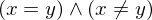

Expression of type Forall¶
from context proveit.logic.equality¶
In [1]:
import proveit
# Automation is not needed when building an expression:
proveit.defaults.automation = False # This will speed things up.
proveit.defaults.inline_pngs = False # Makes files smaller.
# import Expression classes needed to build the expression
from proveit._common_ import x, y
from proveit.logic import Equals, FALSE, Forall, NotEquals
In [2]:
# build up the expression from sub-expressions
expr = Forall([x, y], FALSE, conditions = [Equals(x, y), NotEquals(x, y)])
Out[2]:
In [3]:
# check that the built expression is the same as the stored expression
%check_expr
In [4]:
# Show the LaTeX representation of the expression for convenience if you need it.
print(expr.latex())
In [5]:
# display the expression information
expr.exprInfo()
Out[5]:
| core type | sub-expressions | expression | |
|---|---|---|---|
| 0 | Operation | operator: 1 operand: 2 | |
| 1 | Literal |  | |
| 2 | Lambda | parameters: 12 body: 3 |  |
| 3 | Conditional | value: 4 condition: 5 |  |
| 4 | Literal |  | |
| 5 | Operation | operator: 6 operands: 7 |  |
| 6 | Literal |  | |
| 7 | ExprTuple | 8, 9 |  |
| 8 | Operation | operator: 10 operands: 12 |  |
| 9 | Operation | operator: 11 operands: 12 |  |
| 10 | Literal |  | |
| 11 | Literal |  | |
| 12 | ExprTuple | 13, 14 |  |
| 13 | Variable |  | |
| 14 | Variable |  |